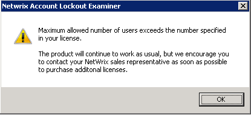
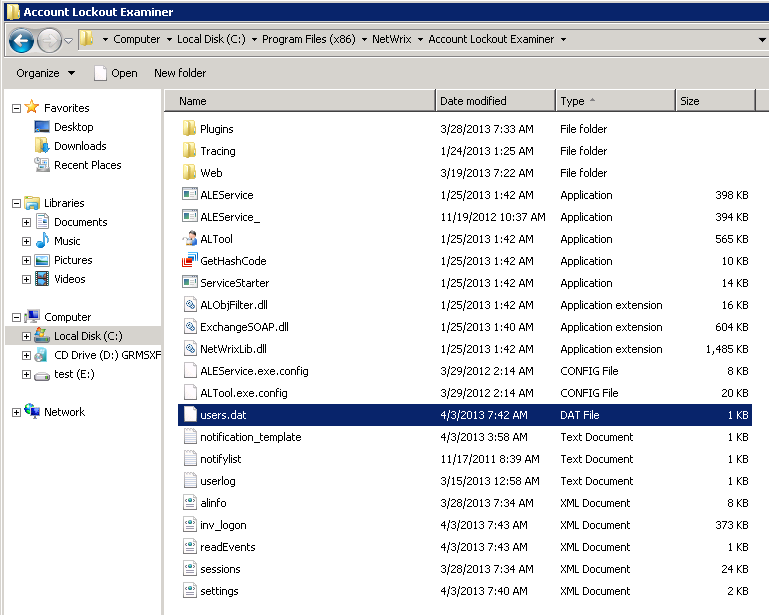
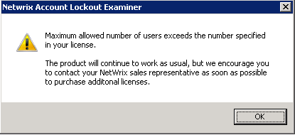
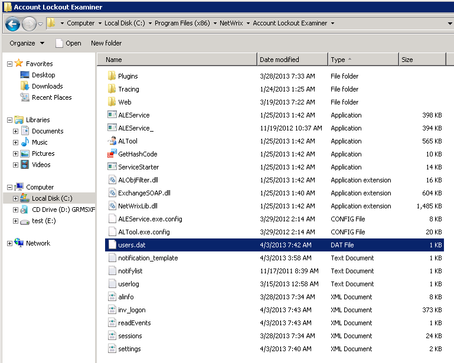

When I start the NetWrix Account Lockout Examiner console, I get the warning that “License
Warning: Maximum allowed number of users exceeds the number specified in your license.
Please contact your system administrator.”

The Account Lockout Examiner software is licensed per administrative seat. This means that any user who was logged into the PC and used the desktop console or web portal is counted as a user. When the user count exceeds the number of licenses, you get the warning message above.It is not possible to determine who was logged into the console previously.
To remove this message, reset the user count.
To do, it stop the NetWrix Account Lockout Examiner service and delete users.dat file that is located in the in Account Lockout Examiner installation directory. Then start the service, launch the console and reenter license.
NOTE: If this message constantly appears, consider requesting additional licenses from your NetWrix sales representative.


The Account Lockout Examiner software is licensed per administrative seat. This means that any user who was logged into the PC and used the desktop console or web portal is counted as a user. When the user count exceeds the number of licenses, you get the warning message above.It is not possible to determine who was logged into the console previously.
To remove this message, reset the user count.
To do, it stop the NetWrix Account Lockout Examiner service and delete users.dat file that is located in the in Account Lockout Examiner installation directory. Then start the service, launch the console and reenter license.
NOTE: If this message constantly appears, consider requesting additional licenses from your NetWrix sales representative.
